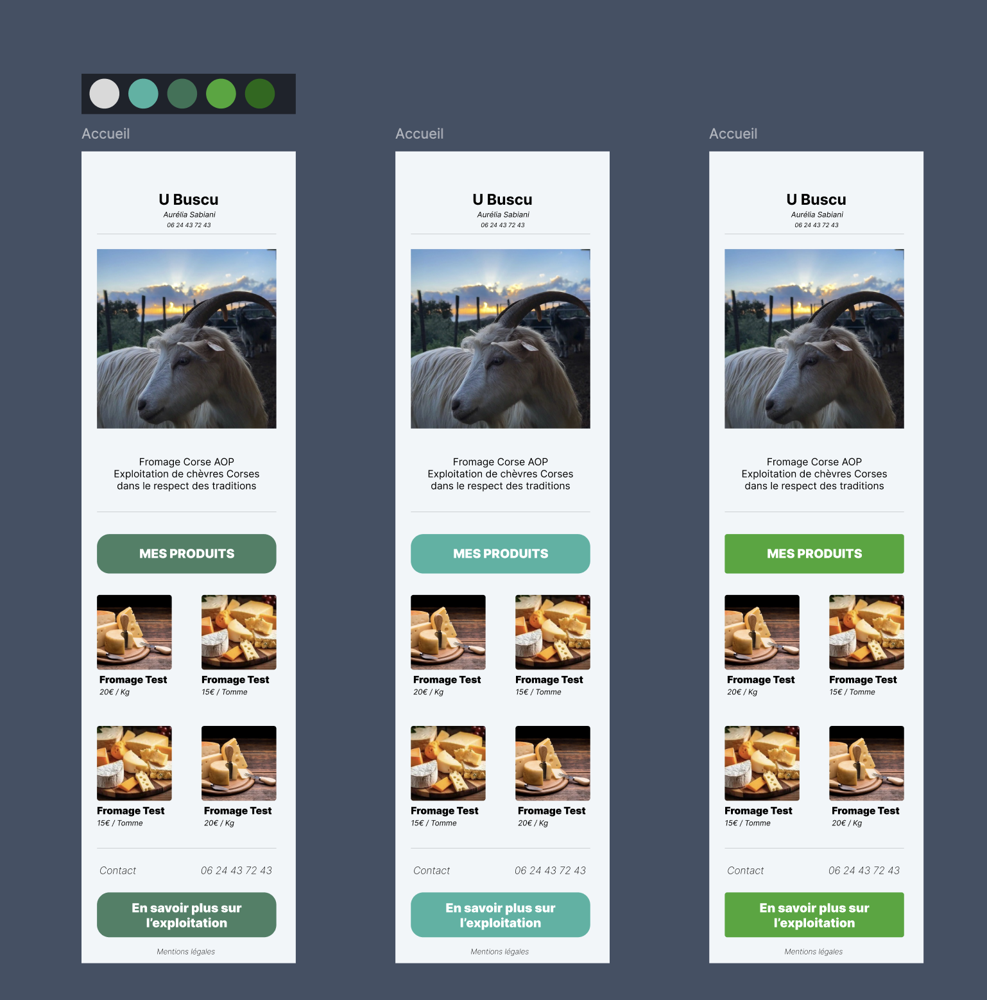

MES PROJETS
Boutique E-Commerce
Interface de gestion de garage
Application mobile de Quizz avec matchmaking (WebSocket)
Site affichage Pays du Monde
A PROPOS
Passionné par l'informatique et le développement, je suis actuellement en deuxième année de Bachelor Informatique à Ynov Aix Campus. Je me spécialise dans le développement logiciel et web, avec un intérêt particulier pour les technologies modernes.
Au fil de ma formation, j’ai acquis des bases solides en programmation avec des langages comme Golang, Java, Python et PHP. Cependant, en parallèle de mes cours, j’ai approfondi mes compétences en TypeScript, NestJS et React à travers des projets personnels, ce qui m’a permis de développer une approche concrète et autonome du développement web.
Mes connaissances en bases de données (MySQL), réseaux et développement full stack me donnent une vision globale du métier de développeur. De plus, les nombreux projets collaboratifs menés au cours de ma formation ont renforcé mes compétences techniques et ma capacité à travailler en équipe.
En dehors de l’informatique, je suis un passionné de cinéma, une source d’inspiration qui stimule ma créativité et mon ouverture d’esprit.
Email : marinh1812 @ gmail.com
Téléphone : 06 51 11 92 09
Lieu d'étude : Ynov Aix Campus
EXPERIENCE PRO
Stage 2023 / 2024
Détails Stage chez U Buscu (2023 / 2024)
Présentation de l'entreprise
Nom de l'Entreprise : U Buscu (Aurélia Sabiani)
Type d'entreprise : Fromagerie Artisanale et Élevage de Chèvres
Lieu : Sari-D'orcino, Corse
Année de Création: 2001
Historique de l'entreprise
U buscu est une entreprise individuelle créée par Aurélia Sabiani, issue d’une famille de producteurs du Niolu, elle élève ses chèvres de race corse et produit ses fromages à Sari d’Orcino au nord-ouest d’Ajaccio.
L'entreprise débute en 2001 avec l'achat d'un troupeau de chèvres corses. L'accent est mis sur la mise en place des infrastructures nécessaires à l'élevage : clôtures, abris, structuration de la bergerie, mise en place d'un quai de traite et achat de terrain. Les revenus de l'entreprise sont donc réalisés avec la vente du lait.
En 2012, l'entreprise étend ses activités avec l’ouverture d'une fromagerie ce qui permet d'avoir 50% de la production de lait qui part en vente et l'autre moitié qui est transformé en fromage. La transformation fromagère devient donc un atout financier majeur ainsi qu'une source de fierté
En 2019, l'entreprise se modernise avec notamment l'acquisition d'une machine à traire
Produits
Les produits de l'entreprise se distinguent par leur caractère rustique et traditionnel, reflet d'un savoir-faire artisanal préservé au fil des années. Les fromages sont fabriqués à partir de lait cru produit par des chèvres corses, élevées dans un environnement respectueux des pratiques ancestrales.
On retrouve 4 types de produits : Le Fromage 'Venacais', le fromage 'Niulincu', la Tomme et le Brocciu (AOP). Ces fromages sont donc livrés chez des particuliers ou dans des petits magasins de la région
La production de ces différents fromages procurent à Aurélia la satisfaction de perpétuer un savoir-faire traditionnel notamment transmis par ses parents.
L'importance de la chèvre Corse
En défendant la chèvre corse, nous préservons non seulement un patrimoine génétique unique, mais aussi un savoir-faire ancestral lié à la production de fromages au lait cru de haute qualité. De plus, la protection et la promotion de cette race soutiennent la biodiversité locale et favorisent une agriculture respectueuse de l'environnement.
C'est dans cette optique qu'Aurélia est aujourd'hui présidente de L'Associu Capraghji Corsu, fondé en 2018 et qui œuvre pour la préservation et la promotion de la chèvre corse. En tant que présidente, elle est fière de défendre cette race emblématique qui valorise les ressources naturelles et les traditions agricoles corses. L'association soutient la reconnaissance de la chèvre corse, favorise l'échange de savoir-faire entre éleveurs et promeut les produits issus de cette race unique, contribuant ainsi à la sauvegarde du patrimoine local.
Missions
J'avais donc pour mission principale durant ce stage de créer un site vitrine pour l'entreprise, accessible via un QR code placé sur les emballages des différents fromages. Cela permettrait aux utilisateurs d'obtenir des informations sur l'entreprise, l'exploitation et les produits, et potentiellement de revenir acheter régulièrement.
Pour mener à bien ces missions, j'ai tout d'abord lister les demandes d'Aurélia pour connaitre ses attentes et pouvoir réaliser les premières maquettes.
Pour la réalisation des maquettes j'ai donc utilisé Figma ce qui m'a permis de mettre au clair mes idées pour le design du site qui est passé par plusieurs version différentes.
1ère maquette du site
Après différentes versions de maquette, on valide la version finale pour passer à la réalisation de la maquette en HTML / CSS / JS
Pour la réalisation du site j'avais aussi besoin de documentation sur l'entreprise ainsi que des photos pour illuster les différentes parties du site.
Pendant la réalisation du site, nous avons eu des nouvelles idées pour agrémenter le site ce qui a permis d'avoir une version assez riche en contenu par rapport aux idées données au début du projet.
Version finale du site
Compétences acquises
Ce stage m'a permis de revoir mes compétences en développement web vu pendant toute cette année, notamment en HTML, CSS et JavaScript. J'ai également consolider mon travail en autonomie, en respectant les délais et les attentes tout en prenant des iniatives en terme de design et contenu du site pour satisfaire au mieux le client.